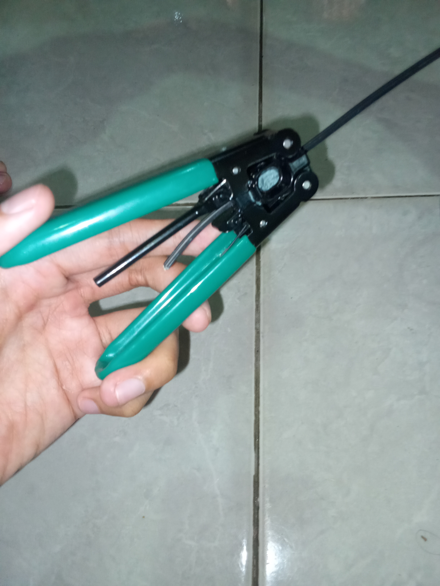
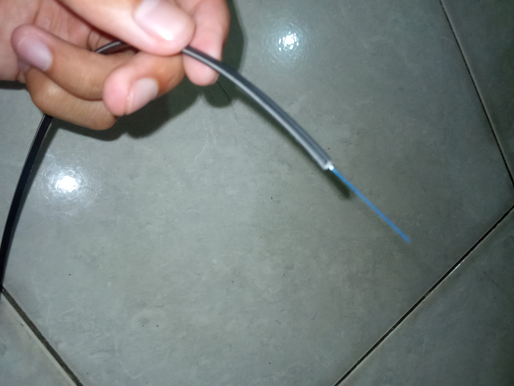
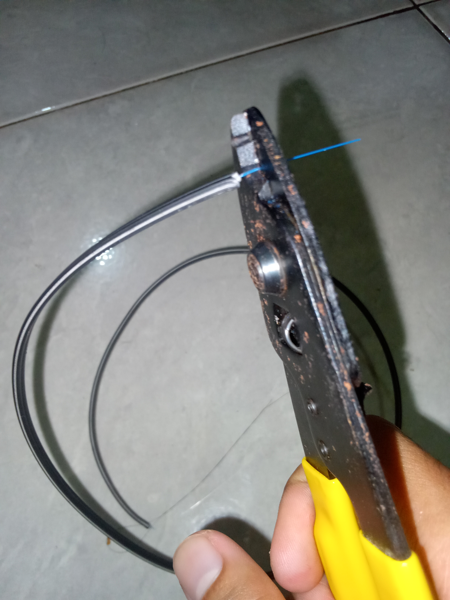
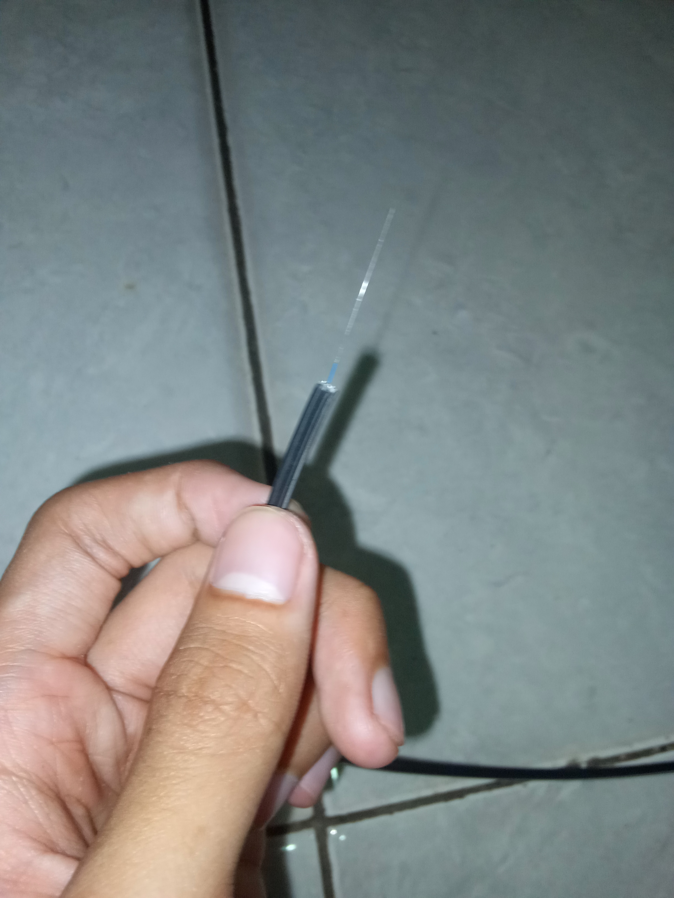
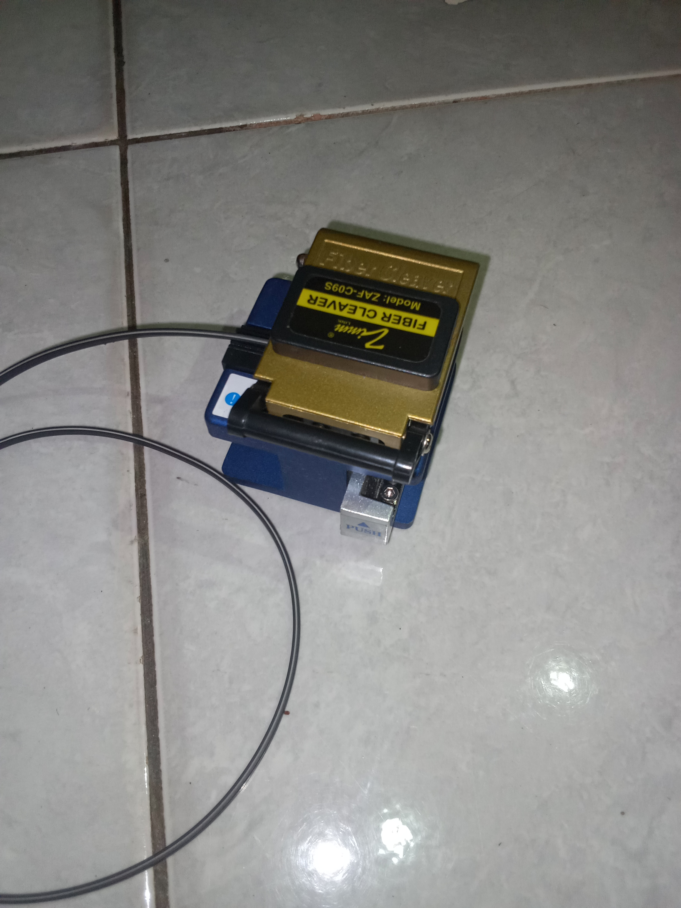
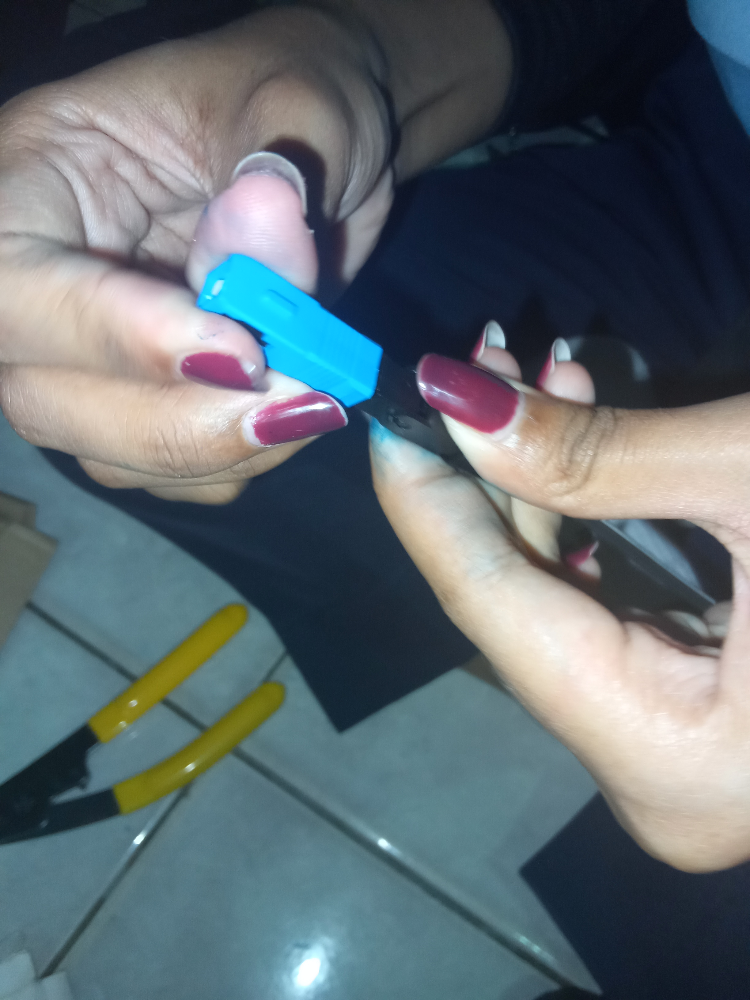

2. Kemudian pisahkan kabel fiber optik dari tembaga menggunakan tang striper warna kuning
3. Setelah itu kupas kabel menggunakan striper dropcore sepanjang 3 sampai 5cm.

4. Lalu kupas clading menggunakan tang striper warna kuning sampai hanya menyisakan core. dan apabila dirasa core masih belum bersih bisa dibersihkan kembali menggunakan cairan alkohol.

5. Kemudian potong core menggunakan cleaver dan untuk panjang core menyesuaikan dengan konektor

6. Setelah itu masukkan core kabel fiber optik kedalam konektor, caranya sebagai berikut:
Pertama buka pengunci pada konektor
Lalu masukkan core kabel sampai menyentuh ujung konektor
Kemudian tutup semua pengunci yang ada pada konektor

7. Langkah terakhir uji kabel menggunakan VFL (Visual Fault Locator).